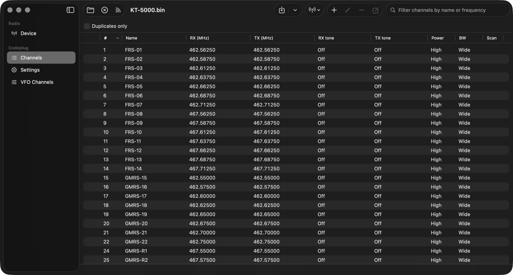
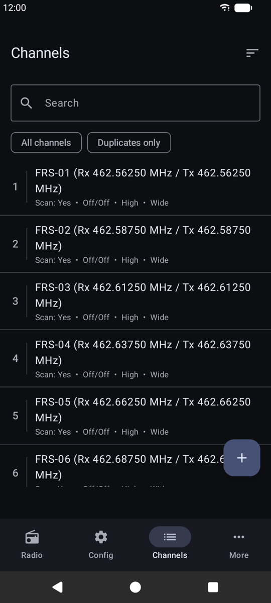

CodeplugMe
Program your ham radio from a Mac, an Android phone, or the command line, without the manufacturer's Windows-only CPS.
What it is
CodeplugMe lets you read, edit, and write the codeplug (the channel and settings memory) of your ham radio over its USB programming cable. It comes as a macOS app, an Android app, and a command-line tool, all built on the same Rust core.
It supports the AnyTone AT-D878UVII Plus (DMR and analog: channels, zones, scan lists, contacts and talk groups, RX group lists, radio IDs) and the QYT KT-5000 (analog: 200 channels, VFO channels, common settings, and the message on the radio's display). Both have been tested end to end on real radios: read, edit, write, and read back.
It's an unofficial, reverse-engineered tool, not affiliated with or supported by AnyTone or QYT, and it comes with no warranty. Back up your radio before you write anything, and check that what you transmit is legal for your license and region.
Features
- Read, edit, write: pull the full codeplug to a
.binfile (which doubles as your backup), edit it, and write it back with a confirmation and progress overlay - Safe editing: your file is never touched until you save, undo and redo work as usual, and unsaved work is kept in a recovery file
- Duplicate detection: channels that match another channel's frequencies and mode get a warning mark, with a filter to show just those
- Bulk edit and Move to Slot: edit several channels at once, or move an entry and have every zone or list that pointed at it follow along
- Nearby repeaters: fill a codeplug with repeaters near a location from Hearham, RadioID, and RepeaterBook, then merge them in or replace your channels
- Scriptable CLI: back up, restore, dump a codeplug as JSON, and apply edits from a JSON file
- KT-5000 rescue:
rescuecommands keep reconnecting to a radio stuck in a reboot loop and pick up where they left off
Screenshots


Getting started
For now you build it from source. Install Rust with rustup, then build the command-line tool. For the macOS app, install Xcode and XcodeGen and run ./build.sh. No drivers are needed on macOS.
cargo build --release # binary: target/release/codeplugme-cli
codeplugme-cli ports # list ports; radios are marked
codeplugme-cli backup my-codeplug.bin # read the radio to a file